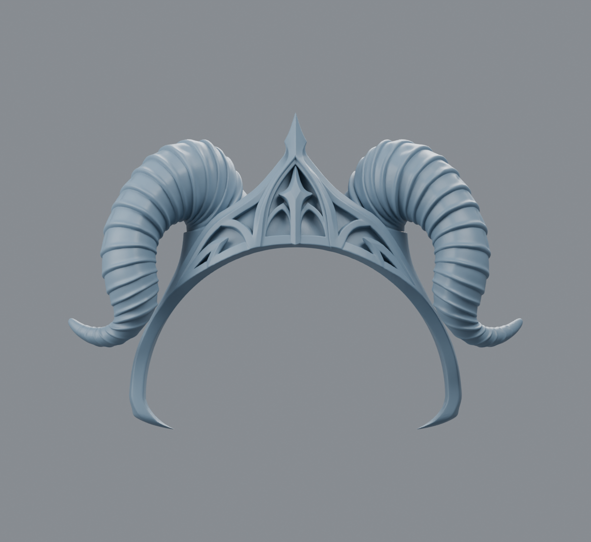
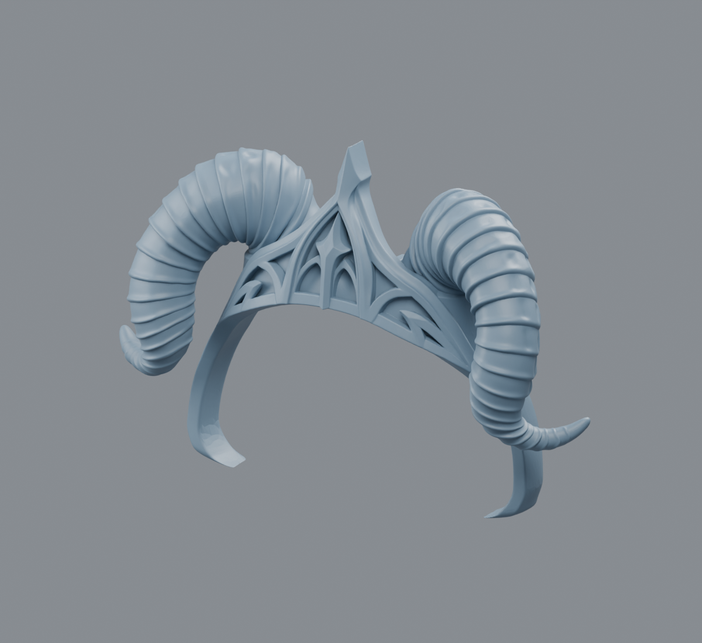
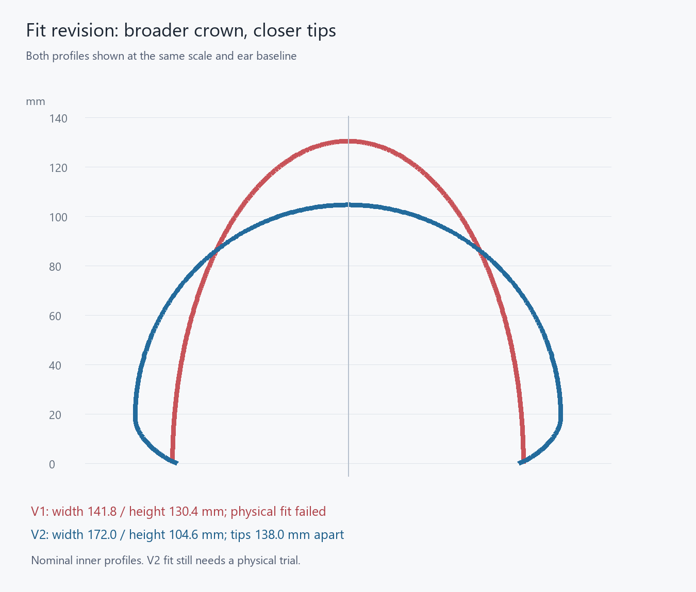
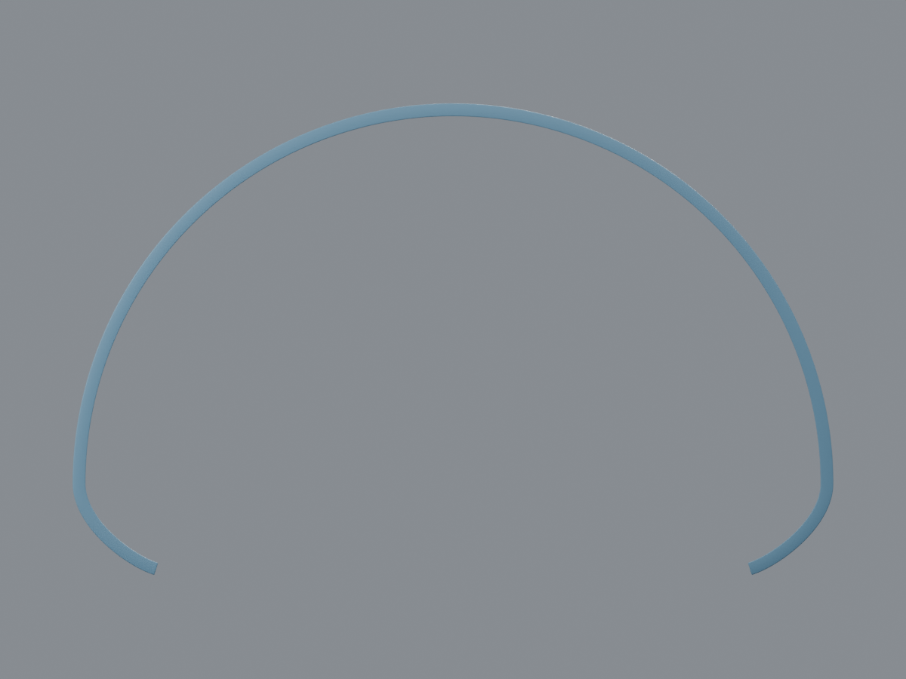
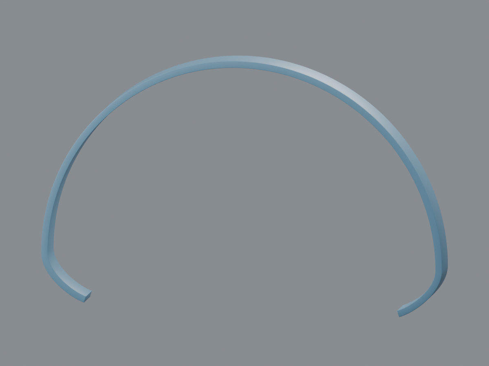
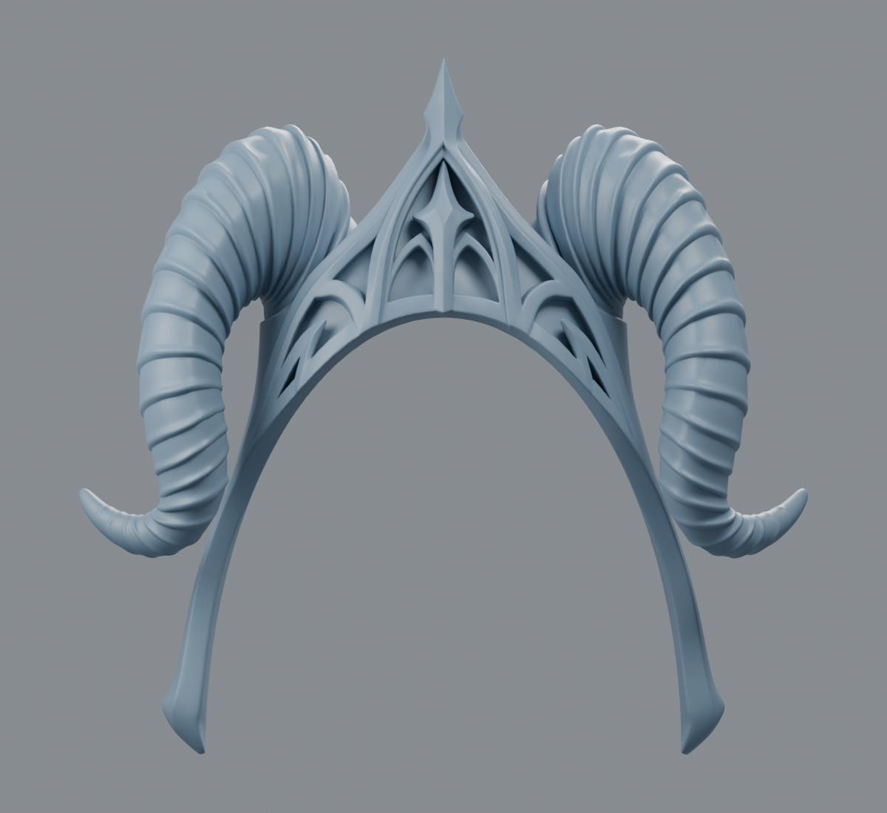
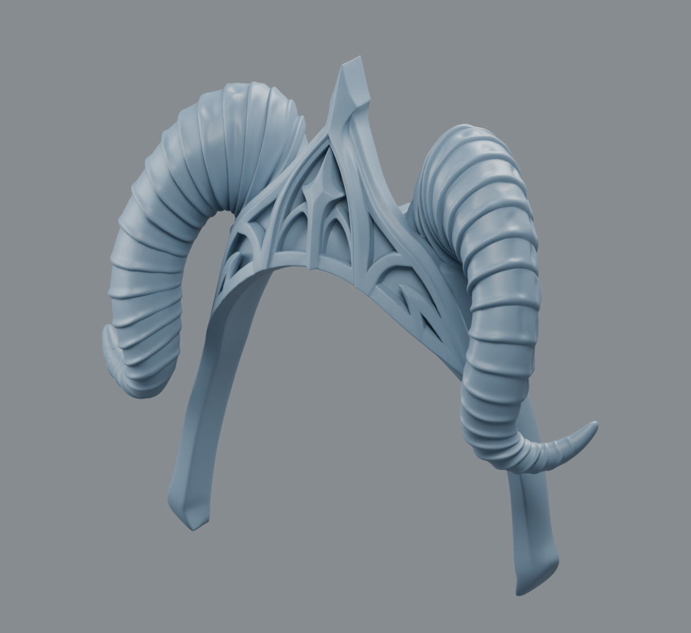
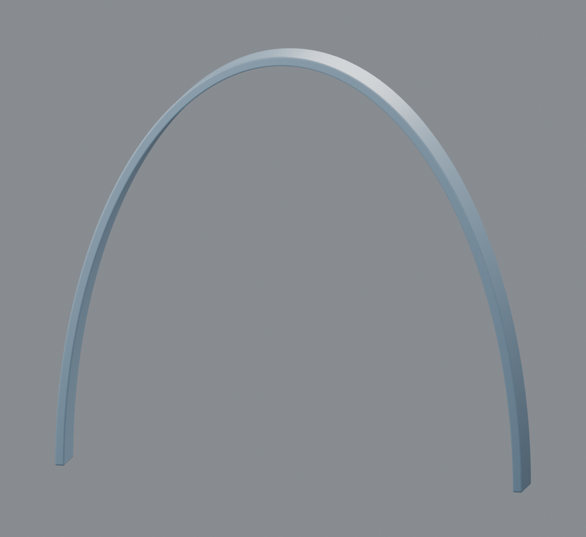
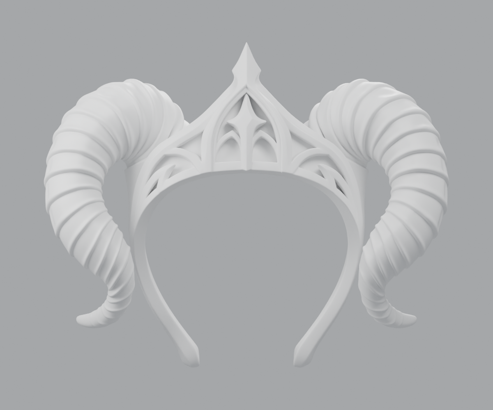
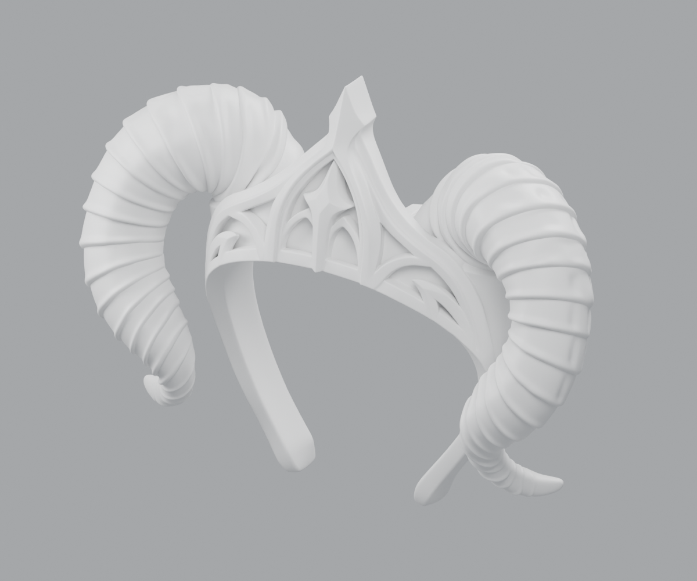

Gothic headband · complete v2
The confirmed v2 contour is now applied to the complete ornament. The wearer reports that the gauge sits correctly, its tips hold without squeezing, and no gap remains. Horn ribs and crown detail are retained.
Bambu Lab A1 · millimetres · 100% scale. The A1 STL is already rotated 45.01° on the plate and measures 231.67 × 231.67 × 72.02 mm. Its geometry fits the A1's nominal 256 × 256 × 256 mm build volume. Keep the fitted scale and center the part in Bambu Studio.

Download image


Download image

Print in Bambu Studio
- Select your A1, installed nozzle and calibrated PLA profile. Import the A1 STL in millimetres at 100% scale; do not use automatic fit-to-plate scaling.
- Keep its supplied flat orientation and center the model. The geometry leaves approximately 12.16 mm per side on a nominal 256 mm square plate.
- Review support under the horns and crown, brim, printer exclusion zones and the sliced layers. Supports and brim are not included in the measured footprint. No printer-specific G-code or verified slicing settings are supplied.
- Check the complete piece's comfort after printing. The plain gauge passed, while the ornament has different stiffness, weight and front-to-back sweep.
Confirmed fit and geometry
Gauge fit confirmed on 17 October 2026: crown seated, tips hold without pressure, no remaining gap. Physical trial record.
The accepted nominal contour retains 172 mm maximum inner width, 104.59 mm crown height and 138 mm between tips. The complete STL was independently reimported: one closed component, consistent winding, no degenerate faces or non-adjacent surface contacts detected.
Complete v2 sources and verification
A monotone transfer follows arc position, retaining all 673,716 triangles and their connectivity. Radial ornament relief and front-to-back coordinates retain their existing fitted millimetre scale. The rejected v1 ellipse is used only to invert the prior deformation. The original and previous STL revisions remain unchanged.
The standard STL measures 261.73 × 182.10 × 72.02 mm. The A1 file applies only a rigid rotation around Z, preserving scale and layer orientation. Both exports were checked independently. The complete ornament's physical comfort remains untested.
Standard v2 STL · Complete v2 measurements · Export verification · A1 orientation · Bed footprint checks · Build script
Approved v2 gauge · measurements and comparison
The wider, flatter crown uses the measured 170 mm straight head width. The tips converge gently to address the slightly loose sides reported in v1. The plain v2 gauge passed its physical test.
Import in millimetres at 100% scale. The test should measure 178.00 × 110.39 × 12.00 mm in its supplied print orientation. Disable automatic “fit to plate” scaling.
What changed

Download comparison
| Nominal inner profile | V1 · failed fit | V2 · gauge fit confirmed |
|---|---|---|
| Maximum inner width | 141.79 mm | 172.00 mm, allowing 1 mm per side around the measured 170 mm width |
| Crown height from tip baseline | 130.36 mm | 104.59 mm |
| Radius at the crown | 38.56 mm | 86.00 mm, for a flatter upper curve |
| Free gap between tips | 141.79 mm | 138.00 mm |
| Nominal over-head arc | 323.07 mm | 323.14 mm |
The widest part and the free ends now have different widths. The 138 mm tip gap is a modest trial adjustment from the loose-side feedback; it is not a measured lower-head width or a prediction of holding force.
V2 gauge print reference
- Use the same calibrated PLA profile as the first test, keeping the supplied flat orientation and 100% scale. A 0.2 mm layer height and at least four walls remain a reasonable starting point.
- Check whether the upper arch sits close to the crown, without the large central gap seen in v1.
- Check whether the tips support the sides lightly without slipping or pressing painfully. Do not force the PLA arms apart if the new fit is tight.
- The wearer confirmed that this gauge sits correctly, holds without squeezing, and leaves no gap.

Download image


Download image

Scope: the gauge's physical fit is confirmed. Its contour is applied to the complete v2 ornament above; the complete v1 remains failed-fit history.
V2 dimensions and editable sources
A circular crown joins tangent-continuous cubic arms. The 320 mm ear-to-ear tape arc remains the length reference, with approximately 3.14 mm added by the initial crown clearance. The 580 mm circumference and 380 mm forehead-to-nape arc remain reference measurements; the rejected shared-axis ellipsoid does not determine v2.
The gauge retains nominal 3 mm thickness, 12 mm band width and 0.5 mm softened edges so that the shape change can be assessed against the first test.
V1 physical trial · failed
The printed v1 gauge remained suspended above the crown and its sides felt slightly loose. The photos identified the shape mismatch; the subsequent book measurement supplied the 170 mm straight width. Physical trial record.
Historical v1 downloads · failed fit
Printing reference for future revisions: import in millimetres at 100% scale. Automatic “fit to plate” scaling changes the intended fit.
Historical v1 shape · failed physical test

Download image


Download image

Historical v1 gauge and printing reference
V1 test settings
- Load the fit test STL in millimetres at 100%. Its bounding box should be 147.79 × 133.36 × 12.00 mm.
- Keep its supplied flat orientation, with the arch in the XY plane. Use the calibrated profile for your PLA; a 0.2 mm layer height and at least four walls are a reasonable starting point.
- Try it in the intended position. Check for pressure at the temples, a gap at the crown, and whether the ends reach the intended position near the ears. It should sit without having to pry the arms apart.
- If the contour feels wrong, record where and by approximately how many millimetres before printing the complete model. A gauge checks size and position; the full ornament has different stiffness and weight.

Download image
Dimensions and printing
| Item | Dimension / result |
|---|---|
| Supplied tape measurements | 580 mm circumference; 380 mm forehead to nape; 320 mm ear to ear over the crown. |
| Nominal contact arch | 323.07 mm, including a 1 mm increase in the estimated horizontal and vertical semi-axes for initial clearance. |
| Nominal inner opening | 141.79 mm wide × 130.36 mm high. |
| Complete STL | 217.59 × 207.88 × 72.02 mm in its supplied print orientation. |
| Fit test STL | 147.79 × 133.36 × 12.00 mm in its supplied print orientation. |
| Mesh checks | Both exported STLs independently reimported: single closed manifold, no boundary edges or degenerate faces; positive volume; original file unchanged. |
The complete model needs support review for the horns and crown. Its footprint excludes supports and brim: a 220 × 220 mm bed leaves very little margin. Check the usable build area in the slicer and keep the fitted scale.
Rejected v1 estimate · preserved for reference
The tape measurements were treated as three perpendicular elliptical sections sharing semi-axes. The 580 mm circumference defines the horizontal section; twice the 380 mm and 320 mm over-head arcs define the other two sections. This gives an initial transverse head section approximately 139.79 mm wide and 129.36 mm high above the assumed ear baseline.
The model assumes the tape endpoints share a baseline. Real head shape, hair and measuring position can differ, so the result is an estimate rather than a scan. The nominal contact ellipse has 1 mm added to each semi-axis. The source’s slightly asymmetric inner surface remains outside that envelope.
The original U-shaped band was mapped onto the new open arch with a monotone polar deformation. Ornament detail was retained. Microscopic malformed edge clusters in the source were collapsed locally, without remeshing the decorative surface. The test reproduces the nominal arch; it does not reproduce the full model’s front-to-back sweep, mass or stiffness.
The gauge was physically printed and tested: its crown shape failed to fit. No printer-specific G-code is included.
Dimensions and source hash · Export verification · Editable build script
Original model reference
The source STL is unchanged. Its raw bounding box was 62.14 × 18.71 × 50.00 coordinate units; STL does not encode units. The original had minor topology faults and an arch that closed inward at its tips.

Download image


Download image

Updated 17 October 2026 · v2 gauge physical fit confirmed · complete v2 delivered for Bambu A1 · complete-piece comfort and slicer review pending · v1 retained as failed-fit history.